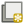
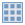
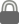
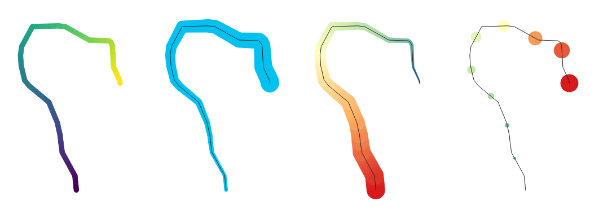
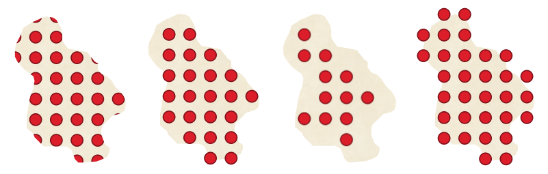
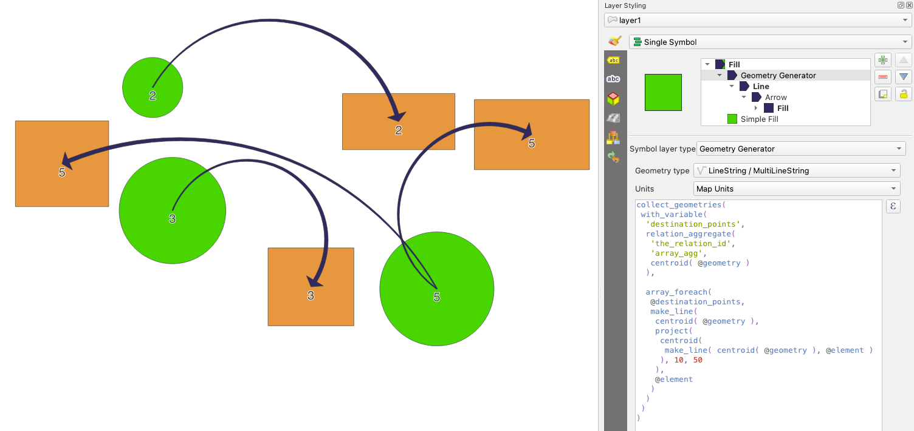
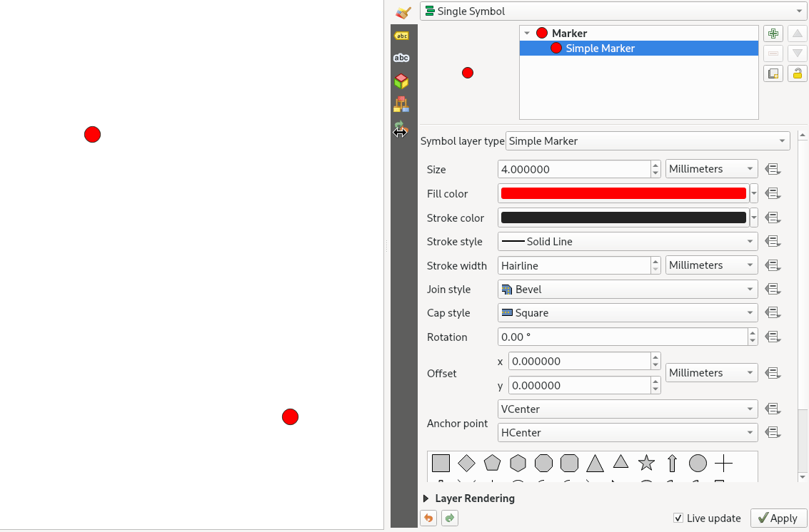

重要
翻訳は あなたが参加できる コミュニティの取り組みです。このページは現在 89.18% 翻訳されています。
14.2. シンボルセレクタ
シンボルセレクタはシンボルをデザインするためのメインダイアログです。マーカー、ライン、塗りつぶしのシンボルを作成したり、編集したりすることができます。
図 14.10 ラインシンボルのデザイン
シンボルセレクタダイアログは2つの主要な要素からなります：
1つはシンボルツリーで、新たなグローバルシンボルを作るために結合されたシンボルレイヤを表示します。
そしてもう1つは、ツリー内で選択されたシンボルレイヤの構成の設定です。
14.2.1. シンボルレイヤツリー
あるシンボルはいくつかの シンボルレイヤ から構成されます。シンボルツリーはこれらのシンボルレイヤの重なりを表示しており、これが新しいグローバルシンボルを形作るために結合されます。また、シンボルのプロパティが変更されると、動的なシンボル表現はすぐに更新されます。
シンボルツリー内で選択されたアイテムのレベルにもよりますが、ツリーの管理に役立つ様々なツールが利用可能です：
 シンボルレイヤを追加：好きなだけシンボルレイヤを重ねることができます
シンボルレイヤを追加：好きなだけシンボルレイヤを重ねることができます シンボルレイヤを削除
シンボルレイヤを削除シンボルレイヤの色を固定：
 ロックされた色は、ユーザーがグローバル（または上位の）シンボルレベルの色を変更しても変更されません
ロックされた色は、ユーザーがグローバル（または上位の）シンボルレベルの色を変更しても変更されません シンボルレイヤ（のグループ）を複製
シンボルレイヤを上下に移動
{kind=link}
14.2.2. シンボルの設定
QGISでは、シンボルの設定は2ステップになっています：シンボルと、シンボルレイヤです。
14.2.2.1. シンボル
ツリーの最上位レベルはレイヤのジオメトリによって異なり、 マーカー 、 ライン もしくは 塗りつぶし タイプです。各シンボルは、1つ以上のシンボル（ほかのタイプのシンボルも含む）またはシンボルレイヤを埋め込むことができます。
グローバルシンボルに適用するパラメータをいくつか設定することができます：
単位 ： ミリメートル（Millimeters） 、 ポイント（Points） 、 ピクセル（Pixels） 、 縮尺済みメートル（Meters at Scale） 、 地図単位（Map units） もしくは インチ（Inches） のどれか（詳細については 単位セレクタ を参照）
不透明度
色 ：このパラメータがユーザーによって変更されると、この値は全てのロックされていないサブシンボルの色にも適用されます
大きさ と 回転 ：マーカーシンボルに対する設定
幅 ：ラインシンボルに対する設定
Tip
シンボルレベルの 大きさ （マーカーシンボル） や、 幅 （ラインシンボル）のプロパティを使用すると、シンボルに埋め込まれた全ての シンボルレイヤ の寸法がこれに比例してリサイズされます。
注釈
幅、大きさ、回転パラメータの横にある データによって定義された上書き ボタンは、スタイルマネージャダイアログから設定する場合には使用不可になります。シンボルが地図レイヤに結合されると、このボタンは 比例シンボルや多変量解析 レンダリングを作成するのに役立ちます。
シンボルライブラリ のプレビュー：同じタイプのシンボルが表示され、すぐ上にある編集可能なドロップダウンリストから、自由形式のテキストや カテゴリ でフィルタリングすることができます。また、
 スタイルマネージャ ボタンを使用して同名のダイアログを開き、シンボルのリストを更新することもできます。 そこでは、 スタイルマネージャ のセクションで公開されている機能を使用することができます。
スタイルマネージャ ボタンを使用して同名のダイアログを開き、シンボルのリストを更新することもできます。 そこでは、 スタイルマネージャ のセクションで公開されている機能を使用することができます。シンボルは以下のいずれかの方法で表示されます：
フレームの下にある
 リストビュー ボタンを使用して、アイコンのリスト形式（サムネイル、名前、関連付けられたタグ）表示
リストビュー ボタンを使用して、アイコンのリスト形式（サムネイル、名前、関連付けられたタグ）表示または、 アイコンビュー ボタンを使用して、アイコンのプレビュー表示
Press the Save Symbol button to open the Save New Symbol dialog. Here, you can choose the Destination where you want to add the symbol being edited, give it a Name and add Tag(s). You also have the option to
 Add to favorites your new symbol.
Add to favorites your new symbol.詳細設定
 オプションでは、以下の設定ができます：
オプションでは、以下の設定ができます：ラインと塗りつぶしシンボルに対しては、 キャンバス範囲に地物を切り抜く かどうかの設定
塗りつぶしシンボルに対して 右手ルールを強制 ：これにより、レンダリングされる塗りつぶし記号を、リングの向きに関する標準的な「右手ルール」（つまり、外側のリングが時計回り、内側のリングがすべて反時計回りのポリゴン）に強制的に従わせることができます。
この方向の強制固定はレンダリング時にのみ適用され、元の地物ジオメトリは変更されません。これにより、レンダリングされるデータセットや個々の地物のリングの向きとは無関係に、一貫性のある見た目の塗りつぶしシンボルが作成されます。
シンボルに適用されているレイヤの シンボロジ に応じて、 アドバンスト メニューでは以下の追加設定ができます：
描画順序... ：シンボルのレンダリング順序の定義
保存されたシンボルに一致 と ファイルからのシンボルに一致... で自動的に シンボルを分類に割り当て
{kind=link}
14.2.2.2. シンボルレイヤ
ツリーの下位レベルでは、シンボルレイヤをカスタマイズすることができます。利用可能なシンボルレイヤのタイプは、上位のシンボルタイプに依存します。シンボルレイヤに  描画エフェクト を適用し、レンダリングを拡張することができます。
描画エフェクト を適用し、レンダリングを拡張することができます。
全てのシンボルレイヤタイプのオプションについて述べるのは不可能なので、以下では特別で重要なものに限って述べています。
共通のパラメータ
マーカー、ライン、塗りつぶしサブタイプにかかわらず、いくつかの共通のオプションとウィジェットがシンボルレイヤを作成するために利用できます。
色操作を簡単に操作するための 色セレクタ ウィジェット
単位 ：ミリメートル（Millimeters） 、 ポイント（Points） 、 ピクセル（Pixels） 、 縮尺済みメートル（Meters at Scale） 、 地図単位（Map units） もしくは インチ（Inches） のどれか（詳細については 単位セレクタ を参照）
ほとんど全てのオプションの横にある
 データによって定義された上書き ウィジェット：各シンボルのカスタマイズ機能を拡張（詳細は データによって定義された上書きの設定 を参照）
データによって定義された上書き ウィジェット：各シンボルのカスタマイズ機能を拡張（詳細は データによって定義された上書きの設定 を参照）- シンボルレイヤを有効化 オプションは、シンボルレイヤの可視性をコントロールします。無効化されたシンボルレイヤはレンダリング時に描画されませんが、シンボル内には保存されています。シンボルレイヤを非表示にできるようになることで、シンボルの最適なデザインを探す際にテストでシンボルレイヤを削除する必要がないため、便利になります。データ定義の上書きはこれに加え、様々なシンボルレイヤを式（すなわち地物属性）に基づいて表示・非表示にすることができます。
- 描画エフェクト ボタン： レンダリング効果 を設定する際に使用
注釈
以下の説明では、シンボルレイヤタイプが地物のジオメトリにバインドされていることを前提としていますが、シンボルレイヤはお互いに埋め込むことができることに留意してください。この場合、下位レベルのシンボルレイヤのパラメータ（配置、オフセットなど...）は、地物ジオメトリ自体ではなく、上位レベルのシンボルにバインドされているかもしれません。
マーカーシンボル
マーカーシンボルはポイントジオメトリの地物に適したシンボルで、いくつかの シンボルレイヤタイプ があります：
シンプルマーカー （デフォルト）

図 14.11 シンプルマーカーのシンボルをデザインする
シンプルマーカーシンボルレイヤタイプには、以下のプロパティがあります:
大きさ ：さまざまな単位をサポートします
塗りつぶし色
ストローク色 、定義済みリストからの ストロークスタイル 、 ストローク幅
継ぎ目スタイル ： Bevel 、 Miter 、 Round から選択します
両端スタイル ： Square 、 Flat 、 Round から選択します
回転
地物からの X および Y 方向の オフセット
アンカーポイント ：シンボル上で象限点を定義し、配置の原点とします。これは、 オフセット が適用されるポイントです。
Animated marker (see Animated marker)
楕円マーカー ：シンプルなマーカーシンボルのレイヤで、シンボル幅と高さがカスタマイズ可能です
塗りつぶしマーカー ： 塗りつぶしのサブシンボル をマーカーのレンダリングに使用する点を除けば、シンプルマーカーのシンボルレイヤと似ています。塗りつぶしのサブシンボルは、マーカーのレンダリングに既存のQGISの塗りつぶし（とストローク）スタイル、例えばグラデーションやShapeburst塗りつぶしを使用することができます。
フォントマーカー ：シンプルマーカーのシンボルレイヤと似ていますが、インストールされたフォントをマーカーとして使用してレンダリングする点が異なります。追加プロパティには以下のものがあります：
フォントファミリー
フォントスタイル
文字 は、シンボルとして表示される文字（列）です。文字は入力するか、フォント文字コレクションウィジェットから選択することができ、選択した設定はライブ プレビュー で確認できます。
ジオメトリジェネレータ （ ジオメトリジェネレータ を参照）
マスクグリッド（Mask） ：このシンボルのサブシンボルはマスク形状を定義し、色の特性は無視されて不透明度だけが使用されます。これは、マーカーシンボルが色の近いラベルや他のシンボルと重なって見えづらい場合に便利です。詳細は マスクプロパティ を参照してください。
ラスタ画像マーカー ：マーカーシンボルとして画像（
PNG、JPG、BMP等）を使用します。画像はディスク上のファイル、リモートURL、スタイルデータベースに埋め込まれたもの（ 詳細はこちら ）、またはbase64文字列が使用できます。画像の幅と高さは独立に設定することもできますし、  アスペクト比を固定する こともできます。サイズは任意の 共通の単位 を使用するか、画像のオリジナルサイズに対するパーセント（幅基準でスケール）で設定できます。ベクタフィールドマーカー （ ベクタフィールドマーカー 参照）
{kind=link}
SVGマーカー ：SVGパス（ メニューで設定されたパス）にある画像をマーカーシンボルとしてレンダリングできます。シンボルの幅と高さは独立に設定することもできますし、 アスペクト比を固定する こともできます。各SVGファイルの色やストロークを調整することもできます。画像はディスク上のファイル、リモートURL、スタイルデータベースに埋め込まれたもの（ 詳細はこちら ）、またはbase64文字列が使用できます。
シンボルは、 Dynamic SVG parameters で設定することもできます。SVGシンボルのパラメータ化については、 パラメータ付きSVG のセクションを参照してください。
注釈
SVGのバージョン要件
QGISは SVG Tiny 1.2 プロファイル に従ったSVGファイルをレンダリングします。このプロファイルは、携帯電話やPDAからノートパソコンやデスクトップコンピュータまで、さまざまなデバイスへの実装が想定されているため、SVG 1.1 Full に含まれる機能のサブセットに加えて、SVGの機能を拡張する新しい機能も含まれています。
この仕様に含まれていない機能は、QGISでは正しくレンダリングされないものがあるかもしれません。
ラインシンボル
ラインシンボルはラインジオメトリの地物に適したシンボルで、以下のようなシンボルレイヤタイプがあります：
直線（Simple Line） （デフォルト）
図 14.12 シンプルラインのシンボルをデザインする
シンプルラインのシンボルレイヤタイプは シンプルマーカーシンボル と同様のプロパティが多数ありますが、これに加えて、
- 破線を使用 ： ストロークスタイル の設定をカスタムの破線で上書きします。破線のモデルを形作る、連続した破線（dash）とスペースの長さを選択した単位で定義する必要があります。パターンの長さの合計がダイアログの下部に表示されます。
パターンオフセット ：ラインにおける破線と空白の位置を微調整して、ラインの角を考慮したより良い位置に破線を配置できます（また、これは隣接する破線パターンの境界を「揃える」ために使用することもできます）。
- 破線の間隔を線の長さに調整する ：破線パターンの長さを調整し、線の終わりが空白ではなく完全な破線要素で終わるようにします。
- 破線の間隔を鋭角に調整する ：破線パターンの配置を動的に調整して、破線要素が鋭角部に出入りし、鋭角が完全な破線要素で表現されるようにします。これは 破線の間隔を線の長さに調整する の設定に依存します。
開始 や 終了 位置からの 線をトリミング ：これにより、ラインを描画する際に実際のラインストリングから最初のx mmと最後のy mmを切り取ったラインをレンダリングできます。これはライン全体の長さに対するパーセンテージも含め様々な 単位 をサポートしており、さらに細かく制御するためにデータ定義とすることもできます。開始・終了のトリミング距離は例えば、ラインの始点と終点に配置されたマーカーシンボルレイヤにラインレイヤがに重なってはいけないような、複雑なシンボルを作成する場合に使用します。
矢印 ：ラインを曲がった（または直線的な）矢印として描画します。ヘッドは一方向または両方向とすることができ、ヘッドの設定が可能です（データ定義とすることもできます）。
ヘッドの種類
矢印の種類
矢印の幅
矢印の始点での幅
ヘッドの長さ
ヘッドの太さ
オフセット
湾曲した矢印 （ライン地物は少なくとも3つの頂点を持っていなければなりません）を作成したり、 各セグメント上に矢印を繰り返す ことができます。また、矢印のボディのレンダリングにはグラデーションや shapeburst といった 塗りつぶしシンボル を使用します。ジオメトリジェネレータと組み合わせると、このタイプのレイヤシンボルはフローマップを表現するのに役立ちます。ジオメトリジェネレータ （ ジオメトリジェネレータ を参照）
補間された線 ：ラインのレンダリングについて、ラインの ストローク幅 や 色 を一定（パラメータを 固定幅 や 単一色 に設定）としたり、ジオメトリに沿って変化させたりすることができます。可変とする場合には、以下の入力が必要です：
開始値 と 終了値 ：地物ジオメトリの両端における値で、値の補間のために使用します。この値は、固定値、地物の属性、または式に基づく値を使用できます。
最小値 と 最大値 ：補間が実行される値の上下限です。
 Load ボタンを押すと、レイヤに適用された開始値・終了値の最小値と最大値に基づいて自動的に値が入力されます。
Load ボタンを押すと、レイヤに適用された開始値・終了値の最小値と最大値に基づいて自動的に値が入力されます。ストローク幅オプションにのみ、以下の設定があります：
最小幅 と 最大幅 ：可変幅の範囲を定義します。 最小値 には 最小幅 が、 最大値 には 最大幅 が割り当てられます。幅の値には 単位 を関連付けられます。
- 絶対値を使用 ：補間には絶対値を考慮します（負の値は正の値として使用します）。
- 範囲外の値を無視 ：地物の
[開始値 - 終了値]の範囲が[最小値 - 最大値]の範囲に含まれない場合、デフォルトでは範囲外の部分の地物ジオメトリは最小幅や最大幅でレンダリングされます。このオプションにチェックを入れると、範囲外の部分の地物ジオメトリは全くレンダリングされません。
可変色については、 カラーランプ の任意の補間方法を利用できます。
 図 14.13 補間された線の例
{kind=link}
マーカーライン ：ラインの長さにわたって マーカーシンボル を繰り返します。
マーカーの位置 ：位置は、（最初の頂点から開始する）等間隔の設定にすることもできますが、ラインジオメトリのプロパティに基づく設定（最初の点、最後の点、内部の点、ラインの中央の点、セグメントの中央の点、すべてのカーブ点）にすることもできます。
最初の点または最後の点を有効にすると、
各パートの両端に配置 オプションを使用でき、マルチパートジオメトリの各パートの最初または最後の頂点にもマーカーをレンダリングします。ラインに沿ったオフセット ：マーカーの配置には、好みの ref:単位 <unit_selector> （ミリメートル、ポイント、地図単位、縮尺済みメートル、パーセントなど）で指定した、ラインに沿った方向のオフセットを指定することもできます。
正の値を指定すると、（マーカーの位置が 最初の点 や With interval の場合には）ラインの方向にマーカーシンボルをオフセットします。位置が 最後の点 の場合は反対方向にオフセットします。
負の値を指定すると、ラインが閉じていない場合には、オフセットは生じない（位置が 最初の点 や 最後の点 の場合）か、（最後の頂点から）反対向きにシンボルをオフセットします。
閉じたリングの場合には、QGISはリングでオフセットが（前方または後方に）周回するものとして扱います。例えば、オフセットを150%（または -10%、-110%）に設定すると、オフセットは閉じたリングの50%（またはいずれも90%）として扱います。
- 線の向きに沿って回転 オプションは、各マーカーシンボルをラインの方向に対する相対的な向きとするかどうかを設定します。
ラインはさまざまな方向のセグメントの連続であることが多いので、マーカーの回転は線に沿って指定された距離を平均することで計算されます。例えば、 角度の平均化範囲 プロパティを
4mmに設定すると、シンボル位置の前後2mmにある、線に沿った2点がそのマーカーシンボルの線の角度を計算するのに使われます。これは全体的な線の方向からの局所的なわずかな変動を平滑化（あるいは除去）する効果があり、結果としてマーカーラインシンボルの見た目の方向がより良くなります。 オフセット量 ：マーカーシンボルをライン地物からオフセットさせることもできます。
ハッシュ線 ：ラインシンボルの長さにわたって線分（ハッシュ）を繰り返します。ハッシュはラインのサブシンボルを使用して個々のセグメントがレンダリングされます。言い換えると、ハッシュ線はマーカーシンボルが線分に置き換わったマーカーラインのようなものです。従って、ハッシュ線はマーカーラインと 同様のプロパティ を持ち、これに加えて以下のプロパティがあります：
ハッシュ線の長さ
ハッシュ線の回転

図 14.14 ハッシュ線の例
ラスタ線: ライン地物の形状の長さに従ってラスタ画像をレンダリングし、繰り返します。guilabel:ストローク幅, オフセット, 継ぎ目スタイル, 両端スタイル, 不透明度 を調整することができます。

図 14.15 ラスタ線の例
線バースト: 線の幅に沿ってグラデーションを描画します。2つの色 または カラーランプ を選択することができ、ストローク幅, オフセット, 継ぎ目スタイル, 両端スタイル を調整することができます。

図 14.16 線バーストの例
塗りつぶしシンボル
ポリゴンジオメトリの地物に適するように、塗りつぶしシンボルにも以下のような様々なシンボルレイヤタイプがあります：
シンプル塗りつぶし （デフォルト）：ポリゴンを均一な色で塗りつぶします

図 14.17 シンプル塗りつぶしのシンボルをデザインする
重心塗りつぶし ：表示されている地物の重心位置に マーカーシンボル を配置します。重心位置の計算はマップキャンバスで表示されている領域にクリップされたポリゴンに対して行われ、穴は無視されているため、マーカーの位置は地物の実際の重心位置ではないかもしれません。正確な重心位置が必要な場合には、 ジオメトリジェネレータシンボル を使用してください。
以下の設定ができます：
マーカーをポリゴンの内側に強制移動する
マルチパート地物の全パートにマーカーを描画 するか、最大パートにのみ描画するかを設定できます
マーカーシンボルは全体を表示するか、それとも一部を表示するかを設定できます。一部表示は、現在の地物ジオメトリと重複する部分を残す（ ポリゴンでマーカーを切り抜く ）か、シンボルが属するジオメトリパートと重複する部分を残す （ 現在の地物の部分でマーカーを切り抜く ）かを設定できます。
ジオメトリジェネレータ （ ジオメトリジェネレータ を参照）
グラデーション塗りつぶし: 単純な 2 色のグラデーション、または事前に定義された グラデーションカラーランプ に基づく、放射状、線形、または円錐状のグラデーションを使用してポリゴンを塗りつぶします。グラデーションは回転させることができ、1 つの地物ごとに適用することも、マップの範囲全体に適用することもできます。また、始点と終点は座標または（地物またはマップの）重心を使用して設定できます。データ定義のオフセットも定義できます。
ラインパターン塗りつぶし ：ポリゴンを ラインシンボルレイヤ によるハッチングパターンで塗りつぶします。次の設定ができます：
整列: パターンと地物の位置関係を定義します：
パターンを地物に揃える: 各地物内にラインが描画されます。
パターンを地図領域に揃える: パターンがマップの範囲全体にレンダリングされ、ラインが地物を横切ってきれいに整列します
ラインを反時計回りに 回転 します
間隔: 2つの隣り合うラインの距離
地物の境界線からの オフセット 距離
切り抜き: 塗りつぶす線をどのようにポリゴンの形に切り抜くかを制御できます。オプションは以下の通りです：
レンダリング中のみクリッピング: 地物のバウンディングボックス全体を覆うラインが生成され、描画中にクリップされます。線の両端（始点と終点）は表示されません。
レンダリング前に線をクリッピング: 線はレンダリング前にポリゴンの正確な形に切り抜かれます。線の両端（両端スタイル、始点/終点マーカーラインオブジェクトなどを含む）は表示され、（ラインシンボルの設定によっては）ポリゴンの外にはみ出ることもあります。
クリッピングしない: クリッピングは全く行われません。ラインは地物のバウンディングボックス全体を覆います
ポイントパターン塗りつぶし ：ポリゴンを マーカーシンボル によるグリッドパターンで塗りつぶします。次の設定ができます：
整列: パターンと地物の位置関係を定義します：
パターンを地物に揃える: マーカーラインが各地物の中にレンダリングされます
パターンを地図領域に揃える: パターンがマップ範囲全体にレンダリングされ、マーカーが地物をまたいできれいに配置されます
図 14.18 地物（左）とマップ範囲（右）へのポイントパターンの整列
距離 ：2つの隣り合うマーカーどうしの 水平 距離と 垂直 距離
変位 ：連続する列方向（または行方向）のマーカー間の並びの 水平 （または 垂直 ）方向のオフセット
オフセット ：地物の境界線からの 水平 距離および 垂直 距離
切り抜き: 塗りつぶすマーカーをどのようにポリゴンの形に切り抜くかを制御できます。オプションは以下の通りです：
切り抜くシェープ: ポリゴンの内側の部分だけが見えるようマーカーを切り抜きます
シェープ内のマーカー重心: マーカーの重心がポリゴンの内側にあるマーカーだけが描画されますが、これらのマーカーはポリゴンの外に出ないよう切り抜かれません
シェープ内のマーカー: ポリゴンの中に完全に入るマーカーだけが表示されます
クリッピングしない: ポリゴンと交差するマーカーは完全にレンダリングされます（厳密には「マーカーのバウンディングボックスと交差する」です）
 図 14.19 塗りつぶしにおけるマーカーの切り抜き - 左から右へ： 切り抜くシェープ、シェープ内のマーカー重心、シェープ内のマーカー、クリッピングしない
パターン全体を時計回りに 回転 します
パターンをランダム化 グループ設定では、ポイントパターン塗りつぶしの各ポイントを、指定した最大距離 水平方向 または 垂直方向 までランダムにずらすことができます。最大オフセットは、ミリメートル、ポイント、地図単位、あるいは 「パーセント」 (パーセントはパターンの幅や高さに対する相対値) など、サポートされている任意の単位で指定できます。
オプションで乱数シードを設定することで、マップの更新時にシンボルパターンが「飛び跳ねる」のを防ぐことができます。データによる定義の上書きにも対応しています。
注釈
パターンをランダム化 と ランダム塗りつぶし シンボルタイプの主な違いは、ポイントパターンによるランダムオフセットでは、マーカーを準「規則的」に配置できることです － パターン内の点が効果的にグリッドに拘束されるため、空の領域やマーカーの重なりがないセミランダムな塗りつぶしを作成できます。(ランダム塗りつぶしとは対照的に、ポイントは常に完全にランダムに配置されます...その結果、点の視覚的なクラスタや不要な空白領域が生じることがあります)。
ランダム塗りつぶし ：ポリゴン境界内のランダムな位置に配置した マーカーシンボル でポリゴンを塗りつぶします。以下の設定ができます：
カウント方法 ：レンダリングするマーカーシンボルの数について、絶対値カウントとするか、または密度ベースのカウントとするか
点の数 ：レンダリングするマーカーシンボルの数
オプションの乱数 シード を設定することで、一貫性のある配置にできます
面積密度 ：密度ベースのカウント方法の場合は、マップが更新されるたびに、異なるスケールやズームレベルでもマーカーの塗りつぶし密度が同じままとなります（QGISサーバーやタイルベースのレンダリングでもうまく配置されるようなランダム配置も可能です）
ポリゴンでマーカーを切り抜く ：端付近にレンダリングされたマーカーをポリゴン境界で切り抜くかどうか
ラスタイメージ塗りつぶし ：ポリゴンをラスタ画像（
PNG、JPG、BMP等）でタイル状に塗りつぶします。画像はディスク上のファイルや、リモートURL、文字列でエンコードされた埋め込みファイル（ 詳細はこちら ）が利用できます。オプション（データ定義可）には、不透明度、画像の幅、座標モード（オブジェクトまたはビューポート）、回転およびオフセットがあります。画像の幅は任意の 共通の単位 を使用するか、画像のオリジナルサイズに対するパーセントで設定できます。SVG塗りつぶし: 与えられた大きさ（テクスチャ幅）の SVGマーカー を用いてポリゴンを塗りつぶします。
Shapeburst塗りつぶし: ポリゴンの境界からポリゴンの中心に向かってグラデーションが描かれるグラデーション塗りつぶしをバッファリングします。設定可能なパラメータには、境界からシェードまでの距離、カラーランプまたは単純な2つの色のグラデーションの使用、オプションで塗りつぶしのぼかし、オフセットなどがあります。
アウトライン：矢印 ：ポリゴン境界の表現にラインの 矢印シンボル レイヤを使用します。アウトライン矢印の設定は、ラインの矢印シンボルの設定と同様です。
アウトライン：ハッシュ線 ：ポリゴン境界（ リング ）の表現に ハッシュ線シンボル レイヤを使用します。リングは、内側リングのみ、外側リングのみ、またはすべてのリングを対象にできます。その他の設定は、ラインのハッシュ線シンボルと同様です。
アウトライン：マーカーライン ：ポリゴン境界（ リング ）の表現に マーカーラインシンボル レイヤを使用します。リングは、内側リングのみ、外側リングのみ、またはすべてのリングを対象にできます。その他の設定は、ラインのマーカーラインシンボルと同様です。
アウトライン：直線（Simple line） ：ポリゴン境界（ リング ）の表現に 直線シンボル レイヤを使用します。リングは、内側リングのみ、外側リングのみ、またはすべてのリングを対象にできます。 ポリゴンの内部にだけ線を描画する オプションは、ポリゴンの内側にポリゴン境界線を表示することで、隣接するポリゴンの境界線をわかりやすく表現するのに便利です。その他の設定は、ラインシンボルと同様です。
注釈
ジオメトリタイプがポリゴンの場合、ライン/ポリゴンのキャンバス範囲への自動クリッピングを無効にするよう選択することができます。いくつかのケース（例：中心点塗りつぶしで、中心が常に実際の地物の中心でなければならない場合など）では、クリッピングによって好ましくないシンボロジが発生してしまうことがあります。
パラメータ付きSVG
You have the possibility to change the colors of a SVG marker.
You have to add the placeholders param(fill) for fill color, param(fill-opacity) for
fill opacity, param(outline) and param(outline-opacity) for stroke color and opacity respectively,
and param(outline-width) for stroke width. These placeholders can optionally
be followed by a default value, e.g.:
<svg width="100%" height="100%">
<rect fill="param(fill) #ff0000" fill-opacity="param(fill-opacity) 1" stroke="param(outline) #00ff00" stroke-opacity="param(outline-opacity) 1" stroke-width="param(outline-width) 10" width="100" height="100">
</rect>
</svg>
より一般的には、SVGでは param(param_name) を使用して自由にパラメータを設定することができます。このパラメータは属性値としても、ノードテキストとしても利用できます：
<g stroke-width=".265" text-anchor="middle" alignment-baseline="param(align)">
<text x="98" y="147.5" font-size="6px">param(text1)</text>
<text x="98" y="156.3" font-size="4.5px">param(text2)</text>
</g>
このパラメータは、 Dynamic SVG parameters テーブル内で式として定義できます。

図 14.20 Dynamic SVG parameters テーブル
注釈
QGIS is looking for a complete SVG node. So if your parameter is within a more complex node,
you need to inject the complete node with the expression.
For instance, transform="rotate(param(angle)" will not work.
Instead, you need to do transform="param(rotation)" and rotation parameter will be defined
with the expression 'rotate(' || coalesce(my_field, 0) || ')'.
ジオメトリジェネレータ
Available with all types of symbols, the geometry generator symbol layer allows to use expression syntax to generate a geometry on the fly during the rendering process. The resulting geometry does not have to match with the original Geometry type and you can add several differently modified symbol layers on top of each other.
単位 プロパティを設定できます。ジオメトリジェネレータシンボルがレイヤに適用されるのではない場合（例えばレイアウトアイテムで使用する場合）、このプロパティによって、生成される出力結果をより制御しやすくなります。
いくつかの例：
Render symbol as the centroid of a feature
centroid( $geometry )
Visually overlap features within a 100 map units distance from a point feature, i.e generate a 100m buffer around the point
buffer( $geometry, 100 )
Create a radial effect of points surrounding the central feature point when used as a MultiPoint geometry generator
collect_geometries( array_foreach( generate_series( 0, 330, 30 ), project( $geometry, 3, radians( @element ) ) ) )
Create a radial effect of points surrounding the central feature point. The number of points varies based on a field.
with_variable( 'symbol_numbers', ceil(fid/10), collect_geometries( array_foreach( generate_series( 0, 360, 360/@symbol_numbers ), project( $geometry, 2, radians( @element ) ) ) ) )
Create a curved arrow line connecting features of two layers based on their relation
collect_geometries( with_variable( 'destination_points', relation_aggregate( 'the_relation_id', 'array_agg', centroid( $geometry ) ), array_foreach( @destination_points, make_line( centroid( @geometry ), project( centroid( make_line( centroid( @geometry ), @element ) ), 10, 50 ), @element ) ) ) )
{kind=link}
{kind=link}
{kind=link}
ベクタフィールドマーカー
ベクタフィールドマーカーは、地殻変動や潮汐流などのベクトル場データを表示するために使用されます。これはベクトル量を、データ点の選択された属性に応じてスケーリングされ方向付けられた線（可能ならば矢印）として表示します。これはポイントデータの描画にのみ使用でき、ラインやポリゴンレイヤはこのシンボロジでは描画できません。
ベクトル場はデータの属性によって定義され、 以下のどれかで表されます：
デカルト座標 成分（フィールドの
xとy成分）または 極座標 系：この場合には、属性は
長さと角度を定義します。角度は北から時計回りに測るか、東から反時計回りに測るかを選べ、角度単位は度もしくはラジアンです。高さのみ データ：これはデータの属性値を使ってスケーリングされた垂直方向の矢印を表示します。これは、例えば変形の鉛直成分を表現するのに適しています。
フィールドの大きさは、フィールドを見るのに適したサイズに拡大・縮小することができます。
Animated marker
Animated marker symbol type allows you to use a .GIF, .WebP,
.MNG, etc. animation file to represent points on your map.
You can specify:
File path,
Frame rate: number of steps that are shown per second, indicating how fast the animation is played,
Size in any supported unit,
Opacity,
Rotation,
Offset in x and y directions from the marker position,
Anchor point
There are two ways to handle animated symbols:
When your map is not configured as an animation (i.e. it's a standard QGIS project without animations), the frame for the animated markers will be determined solely by the current timestamp.
 図 14.21 Animated marker when map is not configured as animation
When your map is configured as an animation, the animated markers will sync with the animation's timeline. This means that animated markers will pause when the animation is paused, progress with the animation, and so forth. The map will also be redrawn according to the frame rate established for temporal animation. This mode is also applied when exporting an animation using the temporal controller.

図 14.22 Animated marker when map is configured as animation
{kind=link}